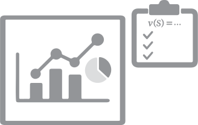

About Us
The Visualization and Design Augmentation Research Group (ViDAR) investigates how creativity shapes design, with a focus on data visualization. We blend human-centered design, empirical research, and tool development to study design processes create novel systems that scaffold creative work.
Research Themes
Example-Aided Visualization Design Ideation
Investigating how visualization designers repurpose existing examples to inspire new designs.
Evaluation Metrics for Visualization Design
Developing metrics to characterize and benchmark various properties of visualization designs.
Intelligent Co-Design Interfaces
Creating intelligent co-design tools that adapt to evolving designer goals without replacing the designer's role.
Support for Visualization Programming
Studying how people write visualization code and developing tools to support expressive prototyping.